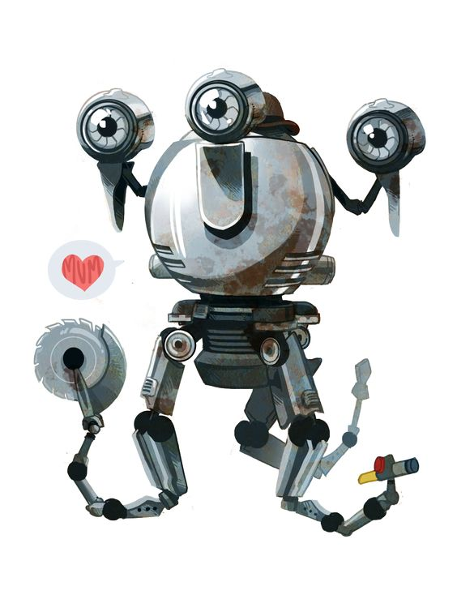

Codsworth is a Mister Handy robotic butler for the Sole Survivor's family before the Great War. He was bought by the family not long before October 23, 2077, as evidenced by the Mr. Handy box in the laundry room of the Sole Survivor's home. He was not granted entry to Vault 111, as claimed by the Vault-Tec rep, and was left behind when the war was announced on television. Codsworth is reunited with the Survivor after 210 years of roaming around Sanctuary Hills, still loyal to his owner.
At first, Codsworth seems cheerful and oblivious to what has happened. During the first ten years after the war, Codsworth tried to keep himself busy by doing futile housekeeping work, such as keeping the nuclear fallout-tainted floors waxed, dusting a collapsed house, and polishing a rusted car. However, talking to him further reveals that he is actually very depressed about the state of the world, and was deeply affected by his two-centuries-long isolation. To cope, he pretended that nothing happened. At some point after the bombs fell, Codsworth visited the town of Concord—mentioning that the locals only "pummeled [him] with sticks a few times" and "shot at [him] on a few occasions" before he retreated to Sanctuary.